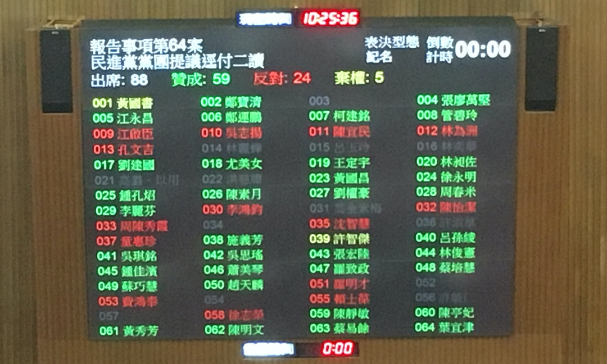
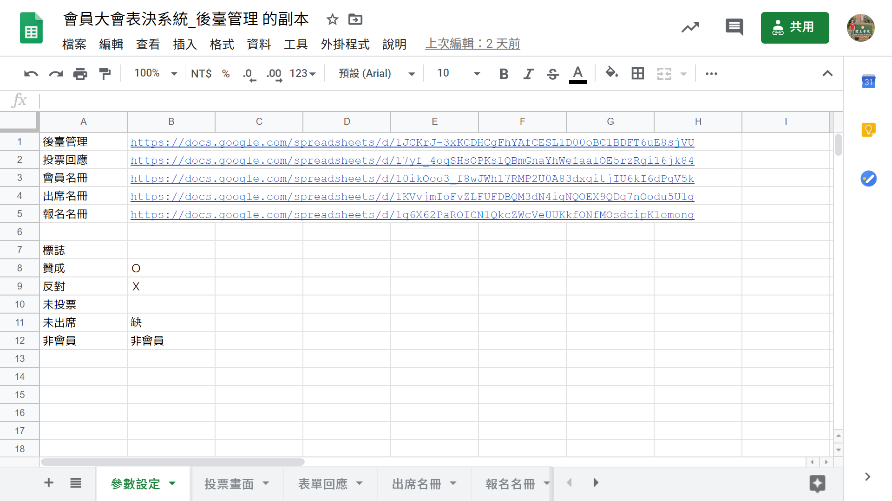
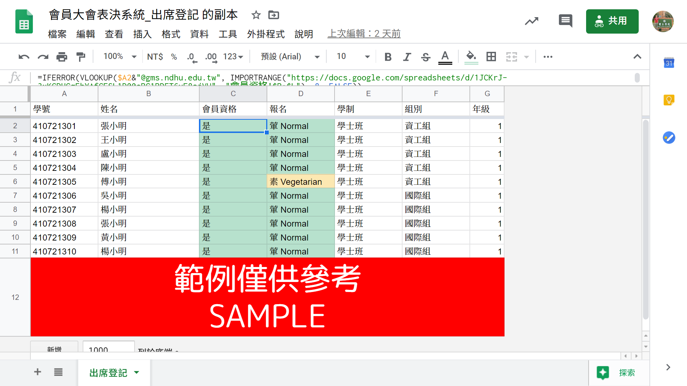
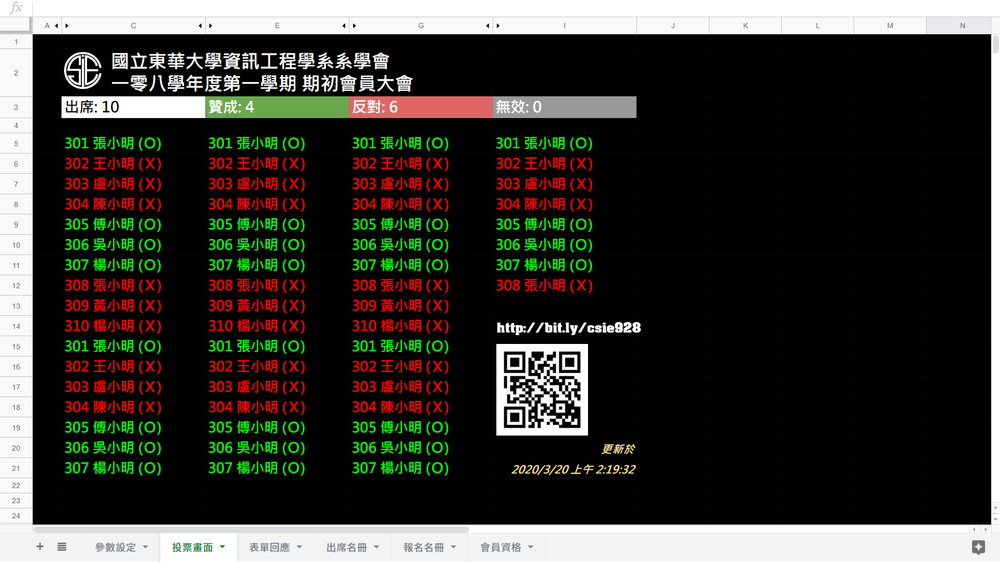

系統簡介
本系統透過免費的 Google Forms 和 Google Sheets 製作，以建構出事前報名、活動報到、投票進行、資料驗證等活動紀錄相連結而成的即時會員投票系統。
本系統是以中華民國立法院的投票電視牆為靈感來發想而成。實際完成介面可見下方圖片「投票進行」。
點圖片可開啟 Sample Files ~
事前將報名資料、會員清冊等資料，以 IMPORTRANGE 的方式嵌入Google Sheet檔案「後臺管理」，以利活動報到作業。且此處使用 IMPORTRANGE 方式，因此能資料不僅能即時更新，也能避免意外更動，更能維持原檔案權限之設定。
而「後臺管理」試算表內多數資料（如IMPORTRANGE目標位置、文字顯示方式等），都以變數形式製作，並置於首張工作表「參數設定」內，以利後續維護等作業進行。
會員入場時，由報到人員掃描貴賓學生證，或直接手動輸入學號於另一「出席登記」試算表，系統將立即自「後臺管理」試算表內找到其會員資格、報名狀態、便當葷素、身分資料等相關資訊並顯示於畫面，以加速與簡化報到流程。
而此處資料連接方式，亦是用 IMPORTRANGE 方式做嵌入。
投票進行時，只要請同學開啟以 Google Forms 製作的「投票表單」進行投票，投票狀況即會立即出現在「投票畫面」上。
「投票畫面」以 IMPORTRANGE 方式自「後臺管理」連結資料，即時取得前臺的報到狀況，並將缺席標註為灰色，出席標註為白色。
投票時，贊成標註為綠色，反對標註為紅色，並將即時自動計算票數（經實測約投票後3秒內會完成反應）。而若在投票截止前重複投票，系統也將自動抓取「最後一筆」投票資料，以使大家有機會在投票時間截止前做意向更動。
而缺席卻投票，或是不在會員名單上（不具投票資格）的同學，將被納入無效票之中。另右下角將自動顯示，系統最後資料更新時間。
【註】投票表單限制須以本校GMS帳號登入填寫，並將於提交時自動記錄Email帳號，因此投票時無須手動輸入任何學號、姓名等資訊，系統即能自動抓取。